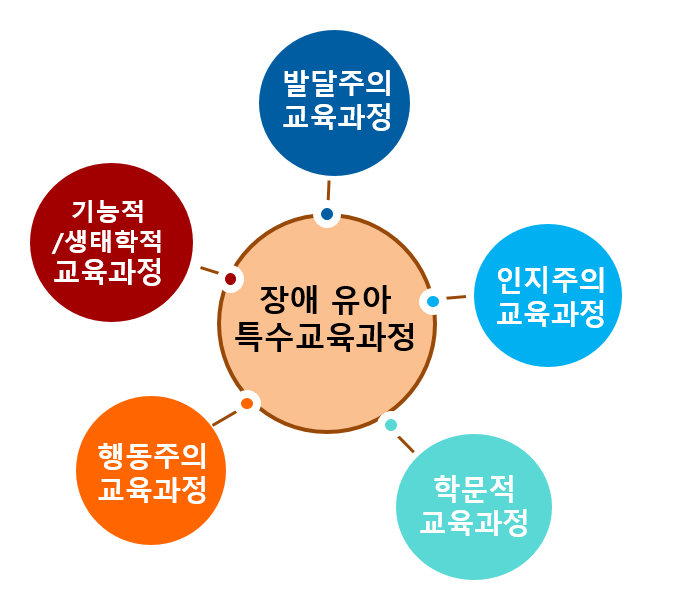

1. 발달주의 교육과정 모형
1) 발달주의 교육과정 모형은 아동 발달 이론에 기반하여, 아동이 정해진 발달 단계에 도달할 수 있도록 지원하는 것을 목표로 한다. 이 모형은 아동의 연령이나 발달 단계에 맞춰 교육을 제공하며, 유아의 전반적인 발달을 촉진하는 데 중점을 둔다. 특히 장애 유아의 경우, 그들이 경험하는 발달의 차이를 고려해 개별화된 접근이 필요하다.
2) 발달주의 모형은 또래 규준 집단과의 비교를 가능하게 하여, 아동이 특정 발달 단계에서 어떤 능력을 갖추어야 하는지를 평가하고 지원할 수 있게 해준다. 예를 들어, 유아가 언어, 사회성, 운동 능력 등에서 또래와 비교해 어떤 차이가 있는지 파악하고, 그에 따라 적절한 교육 활동을 설계하는 것이다.
3) 발달주의 모형은 장애 유아가 전통적인 발달 과정을 따르지 못하더라도, 그들의 개별적 발달 목표를 설정하고 이를 달성하도록 돕는다. 이를 통해 발달 단계별로 유아가 경험해야 할 활동과 학습 목표를 체계적으로 제공할 수 있다. 장애 유아의 발달 속도나 양상이 일반 유아와 다를 수 있지만, 발달주의 모형을 적용함으로써 유아의 발달적 잠재력을 최대한 끌어올릴 수 있는 교육적 환경을 제공하는 것이 가능하다.
결론적으로, 발달주의 교육과정 모형은 장애 유아의 발달 과정을 체계적으로 지원하며, 그들이 개별적 발달 목표에 도달할 수 있도록 돕는다. 이 모형은 장애 유아의 발달적 필요에 맞춘 교육과정을 제공함으로써 그들의 전인적 발달을 촉진하고, 사회적 통합을 이루는 데 중요한 역할을 한다. 발달주의 모형은 장애 유아를 위한 특수교육에서 매우 효과적인 접근 방법으로 평가받고 있다.

2. 인지주의 교육과정 모형
1) 인지주의 교육과정 모형은 피아제의 인지 발달 이론을 기반으로 하며, 유아의 발달 단계를 고려한 교육과정 설계에 중점을 둔다. 피아제는 유아가 능동적으로 환경과 상호작용하면서 인지 구조를 형성한다고 보았으며, 이러한 이론을 바탕으로 인지주의 교육과정은 유아의 사고 발달을 촉진하는 학습 경험을 제공하고자 한다. 이 모형의 가장 큰 특징은 교육 목표와 내용이 유아의 인지 발달 수준에 맞춰 단계별로 체계적으로 구성된다는 점이다.
2) 교수 목표가 논리적으로 연결되고 일관성 있게 구성되어 있다는 점에서 교육적 유용성이 높다. 이를 통해 교사들은 유아의 인지 발달 단계에 적합한 학습 목표를 설정하고, 그에 맞는 적절한 학습 경험을 제공할 수 있다. 예를 들어, 유아가 감각운동기, 전조작기, 구체적 조작기 등의 발달 단계를 거치는 과정에서 각 단계에 맞는 과제를 제시하여 논리적 사고와 문제 해결 능력을 키울 수 있다.
3) 인지주의 모형은 유아가 스스로 탐구하고 문제를 해결하는 과정에서 학습의 주체가 될 수 있도록 돕는다. 따라서 교사의 역할은 지식을 직접 전달하기보다는, 유아가 환경과 상호작용하면서 스스로 지식을 구성할 수 있도록 지원하는 데 있다. 이를 통해 장애 유아도 자신의 발달 수준에 맞는 적절한 학습 기회를 얻을 수 있으며, 이는 그들의 인지 발달을 촉진하는 데 중요한 역할을 한다.
결론적으로, 인지주의 교육과정 모형은 논리적이고 일관성 있는 교육 목표와 내용을 제공하며, 유아의 발달 단계에 맞춘 체계적인 교수 활동을 가능하게 한다. 이를 통해 장애 유아도 논리적 사고와 문제 해결 능력을 기를 수 있으며, 능동적인 학습자로 성장할 수 있다. 이 모형은 장애 유아가 자신의 잠재력을 최대한 발휘할 수 있도록 돕는 중요한 교육적 접근 중 하나로 평가받고 있다.
3. 학문적 교육과정 모형
1) 학문적 교육과정 모형은 전통적인 학문 중심의 교육과정을 기반으로 한다. 이 모형은 읽기, 쓰기, 수학 등과 같은 교과 영역을 주된 내용으로 삼아 교육을 구성한다. 학문적 교육과정 모형은 유아의 인지적 발달을 촉진하고, 학습의 기초를 다지기 위한 중요한 도구로 사용될 수 있다. 그러나 이 모형은 장애 유아의 요구에 완전히 부합하지 않는다는 한계가 있다.
2) 학문적 교육과정은 비학문적인 내용, 즉 일상생활 기술이나 사회적 기술을 충분히 다루지 못한다. 이러한 기술들은 장애 유아에게는 필수적일 수 있는데, 이는 자립 생활을 영위하거나 일상적 상호작용을 위한 중요한 요소이기 때문이다.
3) 학문적 기술이 자연스러운 환경에서 적용되지 않고, 분리된 환경에서 교수된다는 점도 문제점으로 지적된다. 장애 유아들은 종종 학습한 내용을 실제 생활에 적용하는 데 어려움을 겪는데, 이는 교실에서 배운 지식이 실생활과 분리된 환경에서 이루어지기 때문이다.
4) 학문적 기술이 일반 유아들에게는 적합할 수 있지만, 장애 유아들에게는 그리 효과적이지 않을 수 있다. 예를 들어, 지적 장애가 있는 유아는 학문적인 내용을 습득하는 데 시간이 더 걸릴 수 있고, 그들의 발달 수준에 맞춘 개별화된 접근이 필요할 수 있다. 이처럼 학문적 교육과정 모형은 장애 유아에게는 비효율적일 수 있으며, 그들의 특수한 요구에 맞춘 교육과정이 요구된다. 따라서 장애 유아 교육에서 학문적 교육과정 모형의 한계를 인식하고, 이들의 발달적 필요를 충족할 수 있는 보다 유연한 교육 접근이 필요하다.
결론적으로, 학문적 교육과정 모형은 장애 유아 교육에서 중요한 역할을 하지만, 그들의 비학문적 필요를 고려하지 않는다는 점에서 한계가 있다. 이를 보완하기 위해 장애 유아의 특성에 맞춘 개별화된 교육과정이 필요하며, 학문적 기술뿐만 아니라 실생활에 유용한 기술을 함께 가르치는 통합적 접근이 요구된다.
4. 행동주의 교육과정 모형
1) 행동주의 교육과정 모형은 유아의 특정 행동을 증가시키거나 감소시키기 위한 체계적이고 과학적인 방법을 제공한다. 행동주의 모형의 핵심 목표는 기능적이고 일상생활에서 유용한 기술을 유아에게 교수하는 것이며, 이는 유아의 발달 단계와 연령에 적합하게 적용된다. 교사는 유아의 현재 행동을 면밀히 평가하고, 이를 바탕으로 적절한 교수 전략과 계획을 세우며, 필요에 따라 프로그램을 수정하고 조정할 수 있다.
2) 행동주의 모형은 유아의 행동 수정에 매우 효과적이다. 장애 유아는 각기 다른 행동적, 발달적 요구를 가지고 있기 때문에, 이 모형을 통해 구체적인 행동 목표를 설정하고, 이를 달성하기 위한 단계적 과정을 계획할 수 있다. 이를 위해 보상 체계나 긍정적 강화와 같은 행동 수정 기법이 자주 사용된다. 예를 들어, 원하는 행동을 했을 때 칭찬이나 보상을 주어 그 행동이 반복되도록 유도하며, 반대로 부적절한 행동은 무시하거나 제한하여 감소시킨다.
3) 행동주의 교육과정 모형은 개별화된 교육 계획(IEP)과도 밀접하게 연계되어 있다. 각 유아의 발달적 요구와 행동 수준에 따라 맞춤형 계획을 수립하고, 교사는 이를 체계적으로 실행함으로써 유아가 목표한 행동을 달성할 수 있도록 지원한다. 이 모형은 장애 유아의 자기조절 능력 향상, 사회적 상호작용 능력 개발, 그리고 일상생활 기술 습득에 특히 효과적이다.
결론적으로, 행동주의 교육과정 모형은 장애 유아 특수교육에서 중요한 접근 방식으로, 유아의 발달에 필요한 행동을 증진시키고 부적절한 행동을 줄이는 데 효과적이다. 이를 통해 장애 유아가 자신에게 필요한 기능적 기술을 습득하고, 일상생활에서 독립적으로 활동할 수 있는 능력을 길러주는 데 중요한 역할을 한다.
5. 기능적/생태학적 교육과정 모형
1) 기능적/생태학적 교육과정 모형은 장애 유아 교육에서 중요한 접근 방식으로, 유아의 현재와 미래 상황에서 실질적이고 의미 있는 기술을 습득하도록 돕는 것을 목표로 한다. 이 모형은 행동주의 교육과정과 밀접하게 연관되어 있으며, 주로 유아가 일상생활에서 필요로 하는 기능적 기술을 중심으로 교육 내용을 구성한다. 기능적 기술이란 유아가 실생활에서 독립적으로 수행할 수 있는 능력으로, 예를 들어 의사소통, 자기 관리, 사회적 상호작용, 이동 능력 등을 포함한다.
2) 기능적/생태학적 교육과정 모형의 장점은 일반 유아들이 일상생활에서 사용하는 기술들과 연관되어 있다는 점이다. 즉, 장애 유아가 일반 유아들과 함께 생활하면서 동일한 기술을 습득하고, 이를 통해 자연스럽게 통합될 수 있는 기회를 제공한다. 예를 들어, 일상생활에서 필요한 자조 능력, 놀이 기술, 사회적 기술 등을 배움으로써 장애 유아는 일반 유아와의 상호작용을 통해 사회적 기술을 발전시킬 수 있다. 이는 장애 유아가 또래와의 상호작용을 통해 더 나은 사회적 기술을 익히고, 통합된 환경에서 학습할 수 있는 중요한 기회를 제공한다.
3) 기능적/생태학적 교육과정 모형은 유아가 실생활에서 필요로 하는 기술을 가르치는 데 중점을 두기 때문에, 장애 유아가 일상생활에서 더 독립적으로 기능할 수 있도록 돕는다. 이는 단순한 학습의 차원을 넘어 실질적인 생활 기술을 학습하게 함으로써, 유아가 성인이 되어 자립적인 삶을 영위하는 데 큰 도움을 줄 수 있다.
따라서 이 모형은 장애 유아의 발달에 있어 매우 중요한 역할을 하며, 유아가 기능적 기술을 습득하고, 일반 유아들과의 상호작용을 통해 통합된 교육 환경에서 학습할 수 있는 기회를 제공한다. 이는 궁극적으로 장애 유아의 사회적 통합과 자립을 촉진하는 데 기여한다.
2024.09.22 - [특수장애] - 장애 유아를 위한 교육 과정 -개별화 , 맞춤형의 통합적 지원
장애 유아를 위한 교육 과정 -개별화 , 맞춤형의 통합적 지원
장애 유아를 위한 교육과정 의의 장애 유아를 위한 교육과정은 발달적 요구를 충족시키기 위한 체계적이고 차별화된 교육적 접근을 제공하는 데 매우 중요한 역할을 한다. 일반 유아와 달리,
think-sis.co.kr
2022.05.17 - [이론] - 반두라의 발달이론 - 사회적 관계를 위한 모방학습
반두라의 발달이론 - 사회적 관계를 위한 모방학습
인간의 모든 행동은 관찰이나 모방을 통한 학습 인간이 어떤 행동을 학습하는 데 있어서 외부로부터의 자극뿐 만 아니라 인간 내부의 인지적 요인이 함께 작용하여 학습이 진행된다는 것이다.
think-sis.co.kr